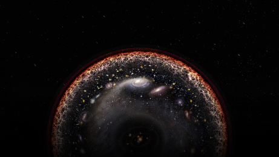
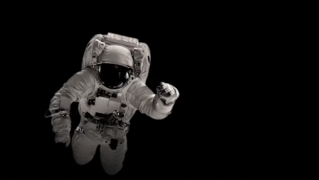

우주의 기원에 대한 현재의 주류 이론은 빅뱅 이론이다. 이 이론에 따르면,
우주는 약 138억 년 전 극도로 고밀도이고 고온인 상태에서 시작되어 지금까지 팽창해왔다.
우주에 대한 우리의 이해는 계속해서 발전하고 있으며, 많은 부분이 아직 미스터리로 남아있다.
특히 우주의 전체 크기, 암흑 물질과 암흑 에너지의 본질 등에서는 여전히 연구가 진행 중이고, 여전히 밝혀지지 않은 우주의 특징들이 많다.
The universe is finite, but it has no boundaries.
우주는 유한하지만, 그 경계는 없다.
우주의 지름이 940억 광년으로 유한하지만, 경계는 없다.
아무리 가더라도 그 끝에 닿을 수가 없다는 뜻이다. 우주라는 시공간은 거대한 스케일로 휘어져 있어 중심이나 가장자리란 게 존재하지 않기 때문이다.
이런 얘기를 들으면, 누구나 의문을 갖지 않을 수 없다. 이에 대해 현대 우주론자들은 다음과 같이 답한다.
우주는 3차원 공간에 시간 1차원이 더해진 4차원의 시공간으로 휘어져 있어 중심도 경계도 없다. 2차원 구면이 중심이나 경계가 없는 것과 같은 이치다.
지구라는 구면을 생각해보면, 어느 지점도 중심이랄 수 없지만, 모든 지점이 다 중심이기도 하다.
그러므로 개미가 무한 시간을 걸어가더라도 이 구면의 끝에 다다를 수 없다. 그처럼 우주 역시 중심도 경계도 없다.
따라서 공간 속의 모든 지점은 본질적으로 동등하다.

The concept of time in the universe is different.
우주의 시간 개념은 다르다.
우주에서의 시간은 우리가 흔히 알고 있는 시간과 다른 개념을 가지고 있다.
일반적으로 시간은 우리가 지구상에서 일어나는 사건들을 측정하기 위해 사용되며,
24시간을 하루로 하고, 365일을 한 해로 정의한다. 그러나 우주에서는 이러한 개념이 상대적이고 유연하게 변한다.
우주에서의 시간은 주로 두 가지 개념으로 이해된다.
첫째,우주 확대에 따른 시간의 흐름 변화로, 우주의 확대로 인해 시간은 상대적으로 더 느리게 흐른다.
이는 알버트 아인슈타인의 상대성 이론에 기초한 것으로, 우주의 질량과 속도에 따라 시간의 흐름이 달라진다.
둘째, 중력에 의한 시간 변화이다. 물체의 중력이 강할수록 시간은 상대적으로 더 느리게 흐른다.
이는 시공간의 왜곡으로 설명되며, 블랙홀 등의 높은 중력을 가진 천체 주변에서는 시간이 더욱 느리게 경과한다.

The universe is zero gravity.
우주는 무중력 상태이다.
우주의 무중력 상태는 일반적으로 생각하는 것과는 조금 다르다. 실제로 우주에는 완전한 무중력 상태가 존재하지 않으며,
우리가 '무중력'이라고 부르는 현상은 중력의 영향이 매우 작아진 상태를 의미합니다.
우주에서 경험하는 '무중력' 상태는 다음과 같은 특징을 가진다.
미소중력 상태: 우주에서는 지구나 다른 천체로부터 멀리 떨어져 있어 중력의 영향이 매우 작아진다.
자유낙하 상태: 우주 시설에서 경험하는 무중력 상태는 실제로 지구 주위를 고속으로 공전하면서 지속적인 자유낙하 상태에 있기 때문에 발생한다.
중력과 원심력의 균형: ISS는 초속 8km의 속도로 지구 주위를 돌고 있어, 지구 중심으로 끌어당기는 중력과 바깥으로 밀어내는 원심력이 서로 상쇄되어 무중력 상태가 된다.